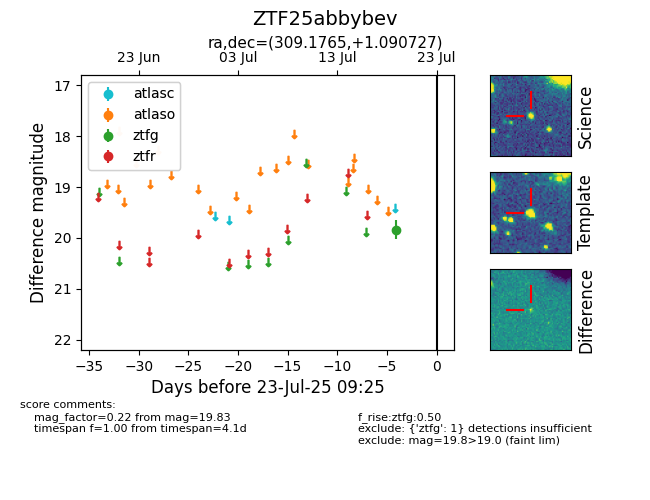

Target ZTF25abbybev at 2025-08-05 23:02, see:
FINK: fink-portal.org/ZTF25abbybev
Lasair: lasair-ztf.lsst.ac.uk/objects/ZTF25abbybev
ALeRCE: alerce.online/object/ZTF25abbybev
alt names
ZTF25abbybev (ztf,fink)
coordinates:
equatorial (ra, dec) = (309.1765,+1.09073)
galactic (l, b) = (46.6676,-22.69426)
photometry
last ztfg=19.83
1 ztfg detections
